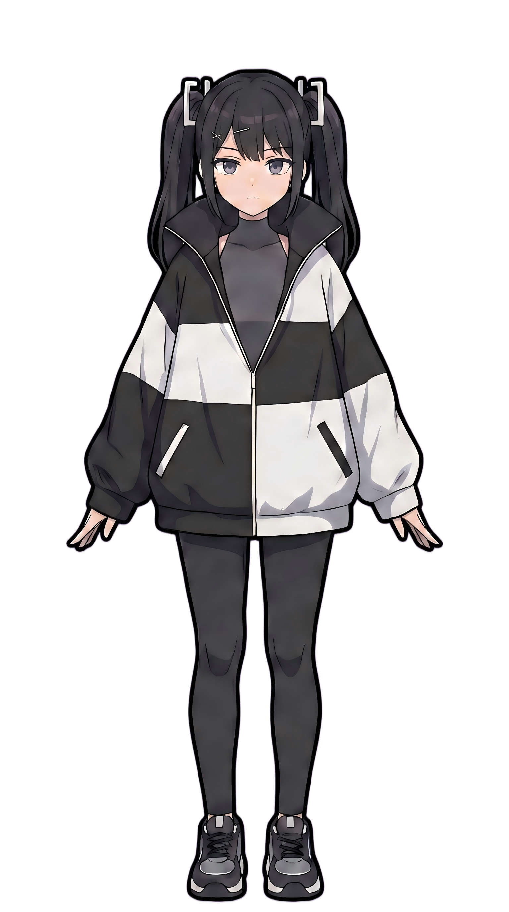

LOCAL-FIRST COMPANION STUDIO
Syna Live
把自己的形象、人设和声音，变成真正陪在桌面与直播间里的 AI 角色。
MIT 开源 · 默认立绘 CC0 · 无遥测
01 / CHARACTER WORKSHOP
先捏出你想陪伴的角色
这里就是 Syna Live 的核心。改人设、换立绘、切表情和台词，右侧舞台会立即同步。
SYNA · COMPANIONLIVE

Syna嘴硬但可靠的陪伴搭档搞怪、嘴上不饶人，但会认真听你说话。
我在呢，今天想聊点什么？
02 / LOCAL FIRST
私人数据留在本机
角色配置、长期记忆、上传立绘和加密凭据保存在用户自己的应用数据目录。没有账号系统，没有分析 SDK，也不会把你的角色上传到项目服务器。
模型由用户自己选择
连接模型，打开舞台，开始陪伴
- 选择模型并在本机保存 Key
- 设置角色人设与立绘
- 将透明舞台地址添加到 OBS